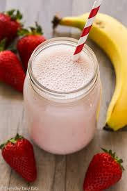

Strawberry Protein and Carb Shake
Home

Description
Have you ever been so heartbroken that you made a choice to become
a better version of yourself so you can get your ex back? Have
you drowned yourself in self-pity and decided to cover that miserable thing
you see in the mirror with muscles? Or perhaps... you chose to worship your body
by nourishing it to the fullest? Regardless,
look no further and say no more. I will provide you with a drink that
looks and tastes like an In-n-Out strawberry shake, which will
make your arms 57 inches in circumference and your legs ripping
through the jeans you've been wearing since high school.
This protein shake has about 41 grams of protein in it. That is a lot
so do make sure that you are drinking a high amount of water every day.
I would not consider this shake as a meal replacement, but rather as a
supplement to your consistent diet.
Ingredients
Directions
-
First, place your strawberries at the bottom of the blender.
-
Next, add your oatmeal to the blender.
-
Next, add your whey protein. Slowly add drinking water to this mixture,
letting the water fill in the gaps between these ingredients until the
mixture begins to rise.
-
Add the yogurt. Add water until the peak of the yogurt is just barely
poking out (roughly 1 centimeter).
-
Close the blender lid and shake the container. Blend for about 10 seconds,
shake the blending apparatus, then blend for another 10 seconds.
-
Drink the shake. Once you're done, add drinking water to the shake bottle
or blender, shake it until all the bits are hit by the water, and drink
the dregs of the shake. You gotta GET IN ALL THAT NUTRITION!!!
-
Do your dishes to maintain your discipline.